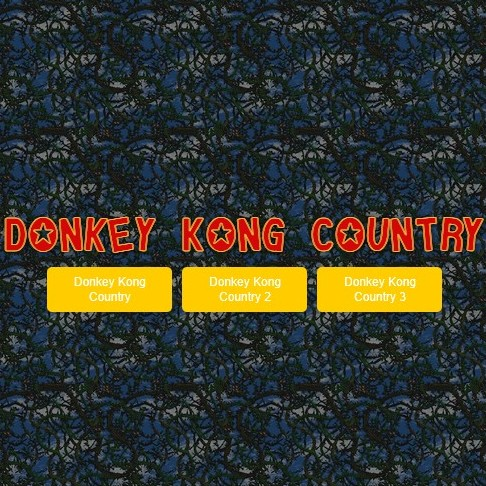

Drumpad Simulator
Description du projet
Réalisé en classe de 1ère, la seule consigne qui avait été donnée l'obligation d'utiliser Python pour réaliser le projet et y implémenter des listes et des dictionnaires.
Drumpad Simulator se compose en 4 pages. La 1ère page sert de menu, les 2e et 3e pages servent à expliquer à quoi servent tous les boutons présents sur la page principale qui est la dernière et donc là où se trouve le drumpad.
Les fonctionnalités disponibles sont :
- Jouer un son avec l'un des 16 carrés colorés au centre de l'écran;
- Ajouter un "blanc", c'est-à-dire ajouter une pause entre 2 sons;
- Enregistrer une suite de sons;
- Modifier cette même suite de sons;
- Ajuste le tempo, c'est-à-dire le délai entre chaque son pendant un enregistrement.
Objectif du projet
Réaliser un drumpad en Python en utilisant les listes est les dictionnaires. Tous les sons utilisés sont rangés dans une bibliothèque